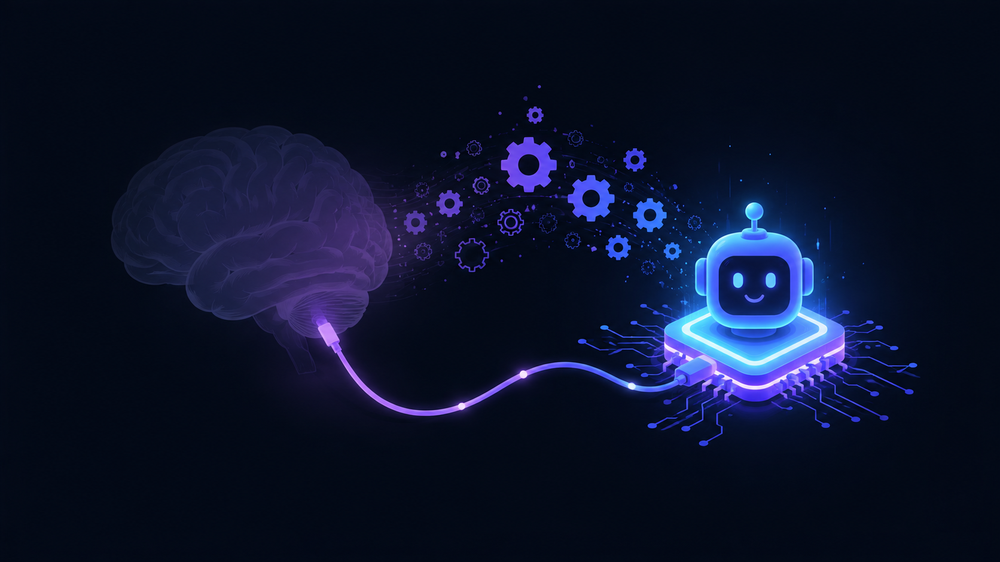
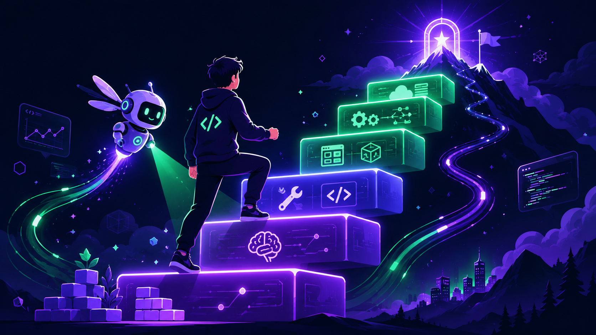

Vì sao lập trình viên là nhóm dễ "học cách bỏ cuộc" nhất khi dùng AI — và cách lật ngược thế cờ để dùng AI như đòn bẩy học hỏi, làm chủ công nghệ.
"AI không làm bạn giỏi hơn hay dở đi. Nó khuếch đại con người bạn đang là."
images/PROMPTS.md.Theo Hiệp hội Tâm lý học Hoa Kỳ (APA), sự bất lực tập nhiễm (learned helplessness) xảy ra khi một cá nhân liên tục đối mặt với tình huống tiêu cực nằm ngoài tầm kiểm soát — đến mức họ ngừng cố gắng thoát ra, ngay cả khi cơ hội thoát đã ở ngay trước mặt.
Khái niệm bắt nguồn từ thí nghiệm năm 1967 của Martin Seligman và Steven F. Maier — thực hiện trên chó. Họ chia chó thành hai nhóm, cho cả hai nhận các cú sốc điện giống hệt nhau, chỉ khác ở một điểm: có kiểm soát được cú sốc hay không. Sau đó cả hai được đưa vào "shuttle box" — chiếc lồng có rào chắn rất thấp, chỉ cần bước qua là thoát:
Nghề lập trình bản chất là giải quyết vấn đề liên tục: đọc lỗi → lần stack trace → giả thuyết → thử → sửa. Mỗi vòng lặp ấy chính là một lần não "tập kiểm soát" — đúng điều kiện sống còn để không rơi vào bất lực.
AI coding assistant đi thẳng vào trung tâm vòng lặp này. Thay vì vật lộn 20 phút với một bug, bạn paste nó vào chat và có đáp án sau 20 giây. Đó là nơi "ủy thác nhận thức" (cognitive offloading) diễn ra: ta giao phần suy nghĩ cho máy, giữ lại phần copy-paste.

images/PROMPTS.md.Mức phơi nhiễm của dev cao hơn hẳn nghề khác:
Đây không phải lo lắng cảm tính. Một loạt nghiên cứu 2025 đã đo được hiện tượng này.
3 nhóm viết luận, đo não bằng EEG. Mức kết nối thần kinh giảm dần khi càng dựa vào công cụ ngoài:
| Nhóm | Kết nối thần kinh (EEG) | Nhớ lại bài vừa viết |
|---|---|---|
| Chỉ dùng não | Mạnh nhất, phân bố rộng | Cao |
| Dùng search engine | Trung bình | Trung bình |
| Dùng LLM (ChatGPT) | Yếu nhất | 83% không nhớ nổi 1 câu |
Khảo sát 319 knowledge worker, 936 tình huống dùng AI thực tế:
Càng tin vào AI → càng ít tư duy phản biện, ít kiểm chứng. Vai trò co lại thành "người duyệt & sửa lỗi của máy".
Càng tự tin vào năng lực bản thân → càng tư duy phản biện nhiều hơn (dù tốn sức hơn). Giữ vai trò "người tạo giải pháp".
RCT trên 16 dev open-source kỳ cựu (TB 5 năm trên chính codebase đó), 246 task chia ngẫu nhiên:
Câu hỏi mới giảm ~76% kể từ 11/2022; tháng 4/2025 giảm 64% so cùng kỳ và hơn 90% so đỉnh 2020. Đáng lo vì SO là nơi tư duy được công khai: câu sai bị mổ xẻ, nhiều cách giải được tranh luận. Hỏi AI riêng tư → mất tầng học từ va chạm cộng đồng đó.
Tự kiểm tra trung thực. Càng nhiều dấu hiệu, càng cần hành động:
Tin tốt: bất lực tập nhiễm có thể đảo ngược. Seligman gọi cách chữa là "learned optimism" — học lại cảm giác mình kiểm soát được. Đây là phiên bản hành động cho dev:
Đừng buông "AI ơi sửa giúp". Hỏi theo hướng kích hoạt tư duy của bạn — dùng AI như mentor giỏi, không phải máy bán đáp án.
Đặt rào cản cố ý: quy tắc "5 phút brain-only" cho mọi bug. Tự viết giải pháp nháp → sau đó nhờ AI review. Bạn vẫn là "người tạo giải pháp".
Bắt AI giải thích từng bước; chủ động tìm lỗ hổng logic. Hỏi: "Sai trong trường hợp nào? Edge case nào? Có lỗ hổng bảo mật không?"
Sai lầm chí mạng là dùng chế độ "ship" cho mọi thứ, kể cả lúc lẽ ra phải đang học. Chủ động dành thời gian cho chế độ "học".
Duy trì deliberate practice: side project không AI, đọc source thư viện, giải thuật toán bằng tay, dạy lại người khác — "phòng gym" giữ cơ bắp tư duy không teo.
Ví dụ cụ thể về cách hỏi — so sánh hai prompt cùng giải quyết một bug:
"Lỗi này, sửa giúp tôi."
→ Bạn copy-paste, không học được gì. Não ghi nhận: "khó là có máy lo".
"Giải thích nguyên nhân gốc, đừng đưa code vội. Cho tôi 3 hướng & trade-off. Hỏi ngược lại để chắc tôi hiểu."
| Chế độ | Mục tiêu | Cách dùng AI |
|---|---|---|
| Sản xuất (ship) | Ra việc nhanh | Tận dụng AI tối đa: boilerplate, refactor, test scaffold |
| Học (learn) | Tăng năng lực lõi | AI ở vai trò mentor/đặt câu hỏi — bạn tự code phần khó |
Làm chủ thời đại AI không phải là tránh AI — mà là liên tục nâng cấp bản thân nhanh hơn tốc độ AI thay đổi. Lộ trình thực dụng:

images/PROMPTS.md.CS fundamentals (data structures, complexity, networking, OS) · đọc-hiểu code & debug bằng tay · tư duy hệ thống & thiết kế.
AI khuếch đại tầng này → giữ cho nó vững.Prompt & context engineering · verify output, phát hiện hallucination · biết khi nào KHÔNG nên dùng AI.
LLM API, function calling, tool use · RAG, embeddings, vector search · AI agents, MCP, orchestration.
Đưa AI vào production an toàn · eval, observability, cost & latency · tự động hoá workflow team.
Con chó trong thí nghiệm Seligman không nhảy ra khỏi lồng không phải vì rào quá cao — mà vì nó đã học rằng cố gắng là vô ích. Bất lực tập nhiễm phiên bản dev cũng vậy: không phải bạn không thể tự giải, mà là bạn đã quen với việc không cần tự giải.
Bí quyết phát triển trong thời đại AI không phải dùng AI ít đi hay nhiều hơn — mà là giữ vững quyền tự chủ tư duy trong khi để AI lo phần lao động lặp lại. Hãy để AI giải phóng thời gian, rồi đầu tư thời gian đó vào việc học những thứ AI chưa thay được.